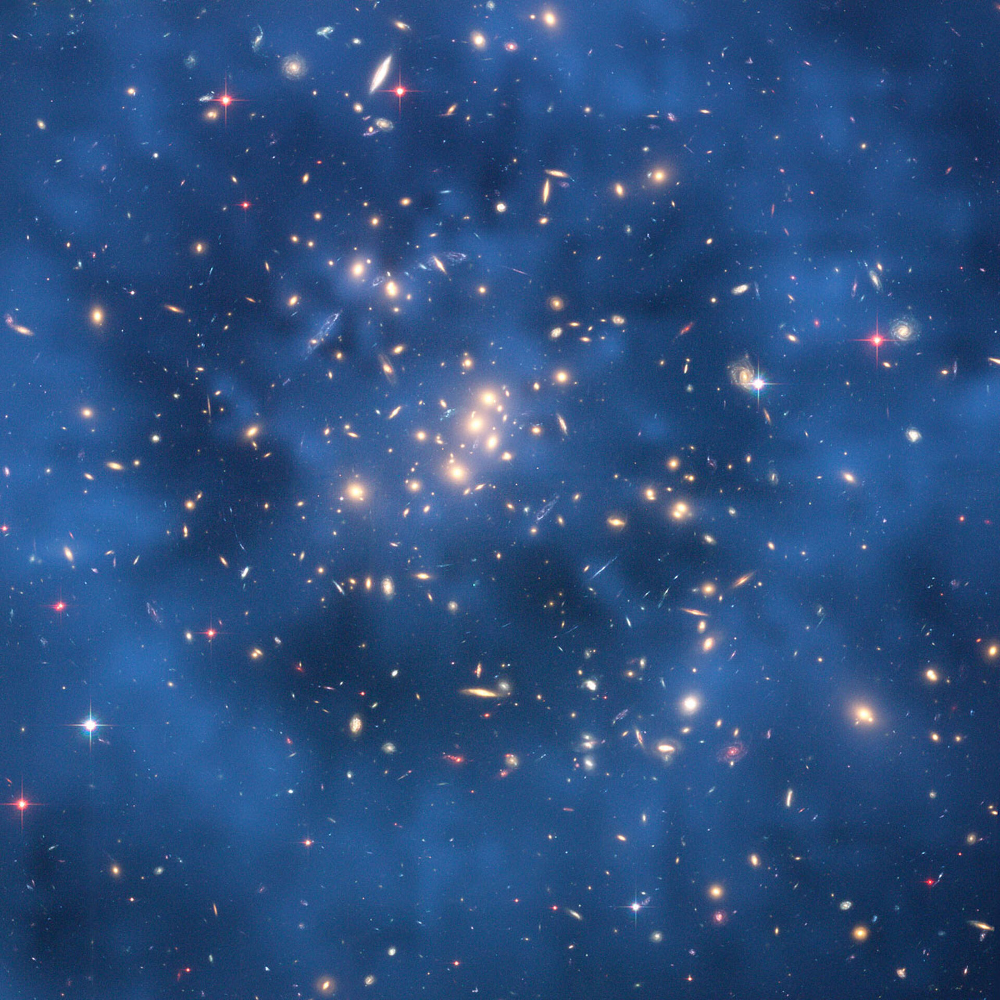
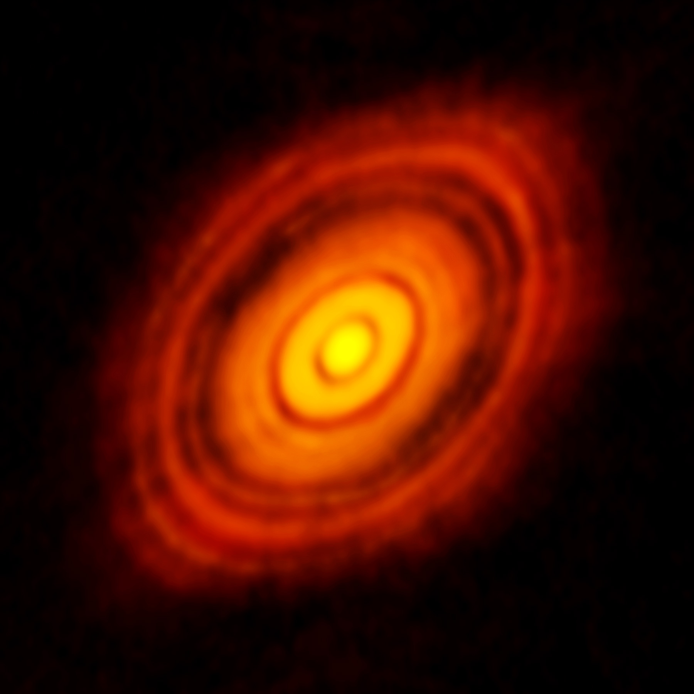
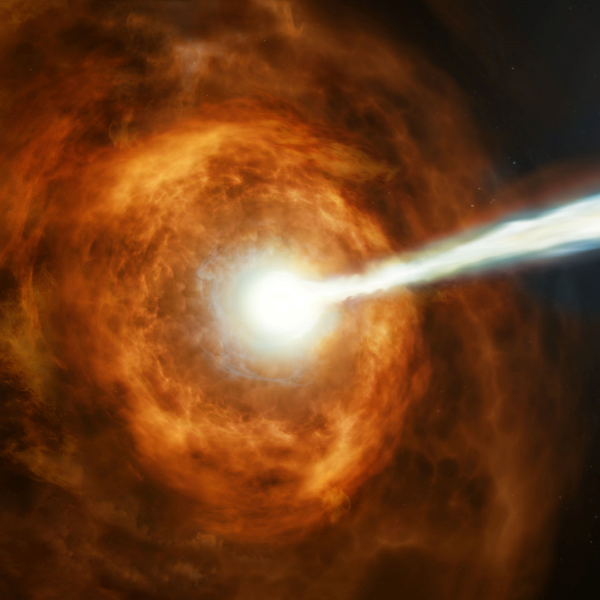
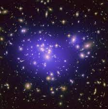
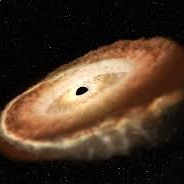
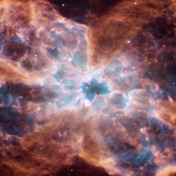

About
The Hubble Space Telescope (HST or Hubble) is a space telescope that was launched into low Earth orbit in 1990 and remains in operation. It is named after astronomer Edwin Hubble and is one of NASA's Great Observatories. It features a 2.4 m (7 ft 10 in) mirror and five main instruments that observe in the ultraviolet, visible, and near-infrared regions of the electromagnetic spectrum. Its orbit outside the distortion of Earth's atmosphere allows it to capture extremely high-resolution images with substantially lower background light than ground-based telescopes. Many Hubble observations have led to breakthroughs in astrophysics, such as determining the rate of expansion of the universe.
Space telescopes were proposed as early as 1923, and the Hubble telescope was funded and built in the 1970s by the United States space agency NASA with contributions from the European Space Agency. Hubble is the only telescope designed to be maintained in space by astronauts. It was launched in 1990, but its main mirror had been ground incorrectly, resulting in spherical aberration. Five Space Shuttle missions have repaired, upgraded, and replaced systems on the telescope, including all five of the main instruments. Hubble is the visible light telescope in NASA's Great Observatories program, with other parts of the spectrum covered by the Compton Gamma Ray Observatory, Chandra X-ray Observatory, and Spitzer Space Telescope. The James Webb Space Telescope (JWST) was launched on December 25, 2021, with the Nancy Grace Roman Space Telescope due to follow in 2027.


The Space Telescope Science Institute (STScI) is responsible for the scientific operation of the telescope and the delivery of data products to astronomers. It was established in 1981 after a power struggle between NASA and the scientific community at large. STScI is responsible for scheduling observations for the telescope, which is in a low-Earth orbit and is occulted by the Earth for slightly less than half of each orbit. The solar avoidance angle is about 50°, to keep sunlight from illuminating any part of the OTA. Earth and Moon avoidance keeps bright light out of the FGSs, and scattered light from entering the instruments.
If the FGSs are turned off, the Moon and Earth can be observed. There is a continuous viewing zone (CVZ) within roughly 24° of Hubble's orbital poles, in which targets are not occulted for long periods. Hubble's orbit is in low Earth orbit at an altitude of 540 kilometers (340 mi) and an inclination of 28.5°. Observation schedules are typically finalized only a few days in advance, as a longer lead time would mean there was a chance the target would be unobservable by the time it was due to be observed. Engineering support for HST is provided by NASA and contractor personnel at the Goddard Space Flight Center in Greenbelt, Maryland, 48 km (30 mi) south of the STScI. Hubble's operation is monitored 24 hours per day by four teams of flight controllers.
Discoveries
The Hubble Space Telescope has lasted an astounding 20 years, and in that time it has revolutionized our understanding of the universe. Here is a short rundown of Hubble's greatest achievements.
-

Dark Matter
Jee et al. 2005, Astrophysical Journal
Dark matter, which is invisible but reveals its existence via gravity, makes up roughly 23 percent of the universe. By analyzing the distortions caused by dark matter's gravity on light from distant galaxies, Hubble helped construct the largest scale 3-D maps scientists have of where dark matter is distributed in the universe. These helped show the clumpiness of dark matter has apparently increased over time, showing it exhibits ordinary gravity, as opposed to something else. Better understanding how dark matter behaves could help scientists figure out what it actually is.
-

Protoplanetary Disks
NASA/ESA and L. Ricci (ESO)
By gazing at star-forming regions such as the Orion Nebula, Hubble was able to show that protoplanetary disks of gas and dust are ubiquitous around many young stars. This reinforces the idea that alien worlds are common in the universe.
-

Gamma Ray Bursts
ESA, Stephen Holland (Danish Centre for Astrophysics with the HST), Jens Hjorth, Johan Fynbo (University of Copenhagen)
Gamma ray bursts are the most powerful explosions known in the universe, typically cutting loose more energy in seconds than our sun will release in its entire 10 billion year lifetime. The origin of these bursts was a mystery for decades. Hubble helped discover these bursts typically occur in galaxies that were actively forming stars and were low in metallicity — that is, low in elements heavier than helium. This suggested gamma ray bursts emerged as massive stars collapsed to form black holes — active star-forming galaxies are often rich in massive stars that collapse quickly, and low-metallicity stars are more likely to retain their mass and form black holes.
-

Dark Energy
NASA and A. Riess (STScI)
By determining the rate at which the universe is expanding, Hubble may have helped solve the mystery of how old the universe is, but it unexpectedly turned up an even more profound one — the fact that the rate of the universe's expansion is not slowing down or even constant, but is inexplicably accelerating. The culprit behind this, dubbed dark energy, is now thought to make up 74 percent of the combined mass-energy in the entire universe, and it remains an utter enigma. Solving this mystery could revolutionize physics as we know it.
-

Black Hole
NASA, ESA, and G. Canalizo (University of California, Riverside)
Hubble discovered that super-massive black holes probably lurk in every galaxy that has a bulge of stars at its center. The very tight link between the size of these central black holes and the size of their galaxies Hubble saw also showed that both evolve in concert, shedding light on how the universe has evolved over time.
-

The Beginning of Time
NASA and H. Richer (University of British Columbia)
Before Hubble, it was highly uncertain as to when the universe was born, which could lead to unbearable paradoxes, such as the laughable possibility that stars astronomers detected were older than our universe. By greatly narrowing down the rate at which the universe is expanding, Hubble helped refine estimates of the universe's age down to roughly 13.75 billion years, a result that not only plays a role in modeling how our universe has evolved over time, but also in our understanding other seemingly unrelated cosmic parameters, such as the mass of neutrinos.